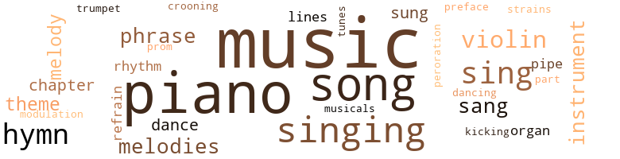
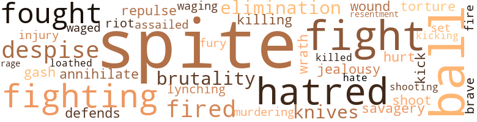
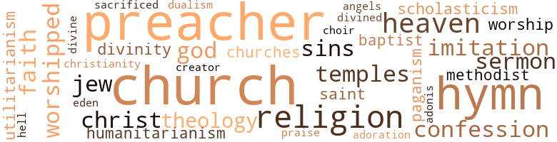

Autobiography of an Ex- Colored Man, by Johnson, James Weldon (1912)
251 music-related terms matched in this text.
Most frequent terms in this topic: music (69); piano (47); songs (23); singing (15); sing (9)
chapter.n.01
Definition: a subdivision of a written work; usually numbered and titled
| word | sentence |
|---|---|
| chapter | I SHALL TAKE ADVANTAGE OF THIS PAUSE IN MY NARRATIVE to describe more closely the " Club " spoken of in the latter part of the preceding chapter - to describe it as I afterwards came to know it , as an habitue . |
| chapters | My affection for him was so strong , my recollections of him are so distinct , he was such a peculiar and striking character , that I could easily fill several chapters with reminiscences of him ; but for fear of tiring the reader I shall go on with my narration . |
| chapter | In a previous chapter I spoke of social life among coloured people ; so there is no need to take it up again here . |
cornet.n.01
Definition: a brass musical instrument with a brilliant tone; has a narrow tube and a flared bell and is played by means of valves
| word | sentence |
|---|---|
| trumpet | Then the leader alone or the congregation in unison : My Lord he calls me , He calls me by the thunder , The trumpet sounds within-a my soul . |
croon.v.01
Definition: sing softly
| word | sentence |
|---|---|
| crooning | She would hold me close , softly crooning some old melody without words , all the while gently stroking her face against my head ; many and many a night I thus fell asleep . |
dance.n.01
Definition: an artistic form of nonverbal communication
| word | sentence |
|---|---|
| dance | In this room song and dance teams practised their steps , acrobatic teams practised their tumbles , and many other kinds of " acts " rehearsed their a turns . " |
| dances | These people have their dances and dinners and card parties , their musicals , and their literary societies . |
dance.n.02
Definition: a party of people assembled for dancing
| word | sentence |
|---|---|
| dance | There were pictures of Frederick Douglass and of Peter Jackson , of all the lesser lights of the prize-fighting ring , of all the famous jockeys and the stage celebrities , down to the newest song and dance team . |
dance.v.03
Definition: skip, leap, or move up and down or sideways
| word | sentence |
|---|---|
| dancing | This was the first word missed , and it seemed to me that some of the scholars were about to lose their senses ; some were dancing up and down on one foot with a hand above their heads , the fingers working furiously , and joy beaming all over their faces ; others stood still , their hands raised not so high , their fingers working less rapidly , and their faces expressing not quite so much happiness ; there were still others who did not move or raise their hands , but stood with great wrinkles on their foreheads , looking very thoughtful . |
foreword.n.01
Definition: a short introductory essay preceding the text of a book
| word | sentence |
|---|---|
| preface | Even so late as the recent Atlanta riot those men who were brave enough to speak a word in behalf of justice and humanity felt called upon , by way of apology , to preface what they said with a glowing rhetorical tribute to the Anglo-Saxon 's superiority and to refer to the " great and impassable gulf " between the races " fixed by the Creator at the foundation of the world . " |
hymn.n.01
Definition: a song of praise (to God or to a saint or to a nation)
| word | sentence |
|---|---|
| hymn | The congregation immediately began with their feet a tramp , tramp , tramp , in time with the preacher 's march in the pulpit , all the while singing in an undertone a hymn about marching to Zion . |
| hymn | It is indispensable to the success of the singing , when the congregation is a large one made up of people from different communities , to have someone with a strong voice who knows just what hymn to sing and when to sing it , who can pitch it in the right key , and who has all the leading lines committed to memory . |
| hymns | For example , most of these hymns are constructed to be sung in the following manner : Leader . |
| hymn | Such a hymn is " Go down , Moses . " |
| hymn | He was a great judge of the proper hymn to sing at a particular moment ; and I noticed several times , when the preacher reached a certain climax , or expressed a certain sentiment , that Johnson broke in with a line or two of some appropriate hymn . |
| hymn | He was a great judge of the proper hymn to sing at a particular moment ; and I noticed several times , when the preacher reached a certain climax , or expressed a certain sentiment , that Johnson broke in with a line or two of some appropriate hymn . |
| hymns | The educated classes are rather ashamed of them and prefer to sing hymns from books . |
| hymns | Always on Sunday evenings she opened the little square piano and picked out hymns . |
| hymns | I can recall now that whenever she played hymns from the book her tempo was always decidedly largo . |
| hymns | When I was seven years old , I could play by ear all of the hymns and songs that my mother knew . |
kick.v.04
Definition: kick a leg up
| word | sentence |
|---|---|
| kicking | The whites regard them just about as a man would a vicious mule , a thing to be worked , driven , and beaten , and killed for kicking . |
music.n.01
Definition: an artistic form of auditory communication incorporating instrumental or vocal tones in a structured and continuous manner
| word | sentence |
|---|---|
| music | The fact is , nothing great or enduring , especially in music , has ever sprung full-fledged and unprecedented from the brain of any master ; the best that he gives to the world he gathers from the hearts of the people , and runs it through the alembic of his genius . |
| music | One thing can not be denied ; it is music which possesses at least one strong element of greatness : it appeals universally ; not only the American , but the English , the French , and even the German people find delight in it . |
| music | I believe that it has its place as well as the music which draws from us sighs and tears . |
| music | I became so interested in both the music and the player that I left the table where I was sitting , and made my way through the hall into the back room , where I could see as well as hear . |
| music | I fell into a fitful sort of sleep , with rag-time music ringing continually in my ears . |
| music | I took a seat at once by the side of the piano-player , and was soon lost to everything except the novel charm of the music . |
| music | Each night after leaving the dice game I went to the " Club " to hear the music and watch the gaiety . |
| music | Through continually listening to the music at the " Club , " and through my own previous training , my natural talent and perseverance , I developed into a remarkable player of rag-time ; indeed , I had the name at that time of being the best rag-time-player in New York . |
| music | I brought all my knowledge of classic music to bear and , in so doing , achieved some novelties which pleased and even astonished my listeners . |
| music | According to a suggestion from the host , I began with classic music . |
| music | After that the talk and the laughter began to grow until the music was only an accompaniment to the chatter . |
| music | When dinner was served , the piano was moved and the door left open , so that the company might hear the music while eating . |
| music | The effect was surprising , perhaps even to the host ; the rag-time music came very near spoiling the party so far as eating the dinner was concerned . |
| music | They watched my fingers and asked what kind of music it was that I was playing , where I had learned it , and a host of other questions . |
| music | He would sometimes sit for three or four hours hearing me play , his eyes almost closed , making scarcely a motion except to light a fresh cigarette , and never commenting one way or another on the music . |
| music | The stopping of the music always aroused him enough to tell me to play this or that ; and I soon learned that my task was not to be considered finished until he got up from his chair and said : " That will do . " |
| music | There were several hundred people , men and women , in the place drinking , smoking , talking , and listening to the music . |
| music | This man of the world , who grew weary of everything and was always searching for something new , appeared never to grow tired of my music ; he seemed to take it as a drug . |
| music | The acquiring of another foreign language awoke me to the fact that with a little effort I could secure an added accomplishment as fine and as valuable as music ; so I determined to make myself as much of a linguist as possible . |
| music | The music there made me strangely reminiscent of my life in Connecticut ; it was an atmosphere in which I caught a fresh breath of my boyhood days and early youth . |
| music | Generally , in the morning after I had attended a performance , I would sit at the piano and for a couple of hours play the music which I used to play in my mother 's little parlour . |
| music | They were singing the second act , but I did not hear the music . |
| music | They drank and smoked a great deal , talked art and music , and discussed , it seemed to me , everything that ever entered man 's mind . |
| music | When they discussed music , it was more interesting to me ; for then some fellow would run excitedly to the piano and give a demonstration of his opinions , and another would follow quickly , doing the same . |
| music | My millionaire planned , in the midst of the discussion on music , to have me play the " new American music " and astonish everybody present . |
| music | My millionaire planned , in the midst of the discussion on music , to have me play the " new American music " and astonish everybody present . |
| music | I had been turning classic music into rag-time , a comparatively easy task ; and this man had taken rag-time and made it classic . |
| music | I doubt that even a white musician of recognized ability could succeed there by working on the theory that American music should be based on Negro themes . |
| Music | Music is a universal art ; anybody 's music belongs to everybody ; you ca n't limit it to race or country . |
| music | Music is a universal art ; anybody 's music belongs to everybody ; you ca n't limit it to race or country . |
| music | Then if you want to write music on Negro themes , why , go ahead and do it . " |
| music | We talked for some time on music and the race question . |
| music | I argued that music offered me a better future than anything else I had any knowledge of , and , in opposition to my friend 's opinion , that I should have greater chances of attracting attention as a coloured composer than as a white one . |
| music | The art of letters , of poetry , of music , of sculpture , of painting , of the drama , of architecture ; the science of mathematics , of astronomy , of philosophy , of logic , of physics , of chemistry , the use of the metals , and the principles of mechanics , were all invented or discovered by darker and what we now call inferior races and nations . |
| music | And so many of these songs contain more than mere melody ; there is sounded in them that elusive undertone , the note in music which is not heard with the ears . |
| music | This feeling is natural ; they are still too close to the conditions under which the songs were produced ; but the day will come when this slave music will be the most treasured heritage of the American Negro . |
| music | I was sure that unknown , without friends or prestige , it would be useless to try to establish myself as a teacher of music ; so I gave that means of earning a livelihood scarcely any consideration . |
| music | During this time we were drawn together a great deal by the mutual bond of music . |
| music | When I began , she drew a chair near to my right and sat leaning with her elbow on the end of the piano , her chin resting on her hand , and her eyes reflecting the emotions which the music awoke in her . |
| music | An impulse which I could not control rushed over me , a wave of exultation , the music under my fingers sank almost to a whisper , and calling her for the first time by her Christian name , but without daring to look at her , I said : " I love you , I love you , I love you . " |
| music | There were two immediate results of my forced loneliness : I began to find company in books , and greater pleasure in music . |
| music | At this time I went in for music with an earnestness worthy of maturer years ; a change of teachers was largely responsible for this . |
| music | Neither did I depend upon mere brilliancy of technique , a trick by which children often surprise their listeners ; but I always tried to interpret a piece of music ; I always played with feeling . |
| music | At that time playing accompaniments was the only thing in music I did not enjoy ; later this feeling grew into positive dislike . |
| music | I dreamed of her , I built air castles for her , she was the incarnation of each beautiful heroine I knew ; when I played the piano , it was to her , not even music furnished an adequate outlet for my passion ; I bought a new notebook and , to sing her praises , made my first and last attempts at poetry . |
| music | There is only one thing in the world that can make music , at all times and under all circumstances , up to its general standard ; that is a hand-organ , or one of its variations . |
| music | She went out of the room and I began to gather from off the piano the music I needed . |
| music | I quickly swallowed down what my mother had put on the table for me , seized my cap and music , and hurried off to my teacher 's house . |
| music | I was soon lost to all other thoughts in the delights of music and love . |
| music | About a year later I began the study of the pipe organ and the theory of music ; and before I finished the grammar-school , I had written out several simple preludes for organ which won the admiration of my teacher , and which he did me the honour to play at services . |
| music | I entered the high school with my class , and still continued my study of the piano , the pipe organ , and the theory of music . |
| music | I lived between my music and books , on the whole a rather unwholesome life for a boy to lead . |
| music | Sometimes I would play for them , and they seemed to enjoy the music very much . |
| music | Sometimes I would leave the parlour door open and play on the piano , just loud enough for the music to reach her . |
| music | A few days later I moved my trunk , piano , my music , and most of my books to his home ; the rest of my books I divided between " Shiny " and " Red . " |
| music | Always on such evenings , when the music was over , my mother would sit with me in her arms , often for a very long time . |
| music | But I am sure this was not due to dullness , for I made rapid progress in both my music and my books . |
| music | And so for a couple of years my life was divided between my music and my school-books . |
| music | I modestly mentioned my ability to teach music and asked if there was any likelihood of my being able to get some scholars . |
| music | The husband , who up to this time had allowed the woman to do most of the talking , gave me the first bit of tangible hope ; he said that he could get me a job as a " stripper " in the factory where he worked , and that if I succeeded in getting some music pupils , I could teach a couple of them every night , and so make a living until something better turned up . |
| Music | Music took up the greater part of my time . |
| music | I discovered that I had a talent for languages as well as for music . |
| music | Through my music teaching and my not absolutely irregular attendance at church I became acquainted with the best class of coloured people in Jacksonville . |
| music | The music and the walk continued for some minutes ; then both were stopped while the judges conferred ; when the walk began again , several couples were left out . |
| music | The other two are rag-time music and the cake-walk . |
| music | In Paris they call it American music . |
| music | When we had passed through a small vestibule and reached the hallway , we heard mingled sounds of music and laughter , the clink of glasses , and the pop of bottles . |
| music | It was music of a kind I had never heard before . |
| music | It was music that demanded physical response , patting of the feet , drum - ming of the fingers , or nodding of the head in time with the beat . |
| music | This was rag-time music , then a novelty in New York , and just growing to be a rage , which has not yet subsided . |
| music | It was originated in the questionable resorts about Memphis and St. Louis by Negro piano-players who knew no more of the theory of music than they did of the theory of the universe , but were guided by natural musical instinct and talent . |
musical.n.01
Definition: a play or film whose action and dialogue is interspersed with singing and dancing
| word | sentence |
|---|---|
| musicals | These people have their dances and dinners and card parties , their musicals , and their literary societies . |
musical_instrument.n.01
Definition: any of various devices or contrivances that can be used to produce musical tones or sounds
| word | sentence |
|---|---|
| instruments | When they got near the church , they sat on the side of the road and , with many grimaces , tenderly packed their feet into those instruments of torture . |
| instrument | Very early I acquired that knack of using the pedals , which makes the piano a sympathetic , singing instrument , quite a different thing from the source of hard or blurred sounds it so gen - erally is . |
| instrument | I at once sat down and ran my fingers over the keys ; the full , mellow tone of the instrument was ravishing . |
| instrument | The new instrument greatly increased the pleasure of my hours of study and practice at home . |
| instrument | Whenever she started toward the instrument , I used to follow her with all the interest and irrepressible joy that a pampered pet dog shows when a package is opened in which he knows there is a sweet bit for him . |
organ.n.05
Definition: wind instrument whose sound is produced by means of pipes arranged in sets supplied with air from a bellows and controlled from a large complex musical keyboard
| word | sentence |
|---|---|
| organ | About a year later I began the study of the pipe organ and the theory of music ; and before I finished the grammar-school , I had written out several simple preludes for organ which won the admiration of my teacher , and which he did me the honour to play at services . |
| organ | I entered the high school with my class , and still continued my study of the piano , the pipe organ , and the theory of music . |
part-singing.n.01
Definition: singing with three or more voice parts
| word | sentence |
|---|---|
| part-singing | The leader and the congregation begin with part-singing : Steal away , steal away , Steal away to Jesus ; Steal away , steal away home , I ai n't got long to stay here . |
peroration.n.02
Definition: (rhetoric) the concluding section of an oration
| word | sentence |
|---|---|
| peroration | When , in the famous peroration , his voice , trembling with suppressed emotion , rose higher and higher and then rested on the name " Toussaint L'Ouver-ture , " it was like touching an electric button which loosed the pent-up feelings of his listeners . |
phrase.n.02
Definition: a short musical passage
| word | sentence |
|---|---|
| phrases | I could stammer out a few phrases , but , very naturally , could not understand a word that was said to me . |
| phrases | I also practised a set of phrases like the following : " How ? " |
| phrase | It was nothing more or less than the simple phrase " Thank you , " or sometimes more elaborated , " Thank you very kindly , sir . " |
| phrases | I was particularly struck by the way in which it was punctuated by such exclamatory phrases as " Lawd a mussy ! " |
| phrases | He appealed to them in short singsong phrases . |
piano.n.01
Definition: a keyboard instrument that is played by depressing keys that cause hammers to strike tuned strings and produce sounds
| word | sentence |
|---|---|
| piano | In the back room there was a piano , and tables were placed round the wall . |
| piano | When I came to know her , I found that she was a woman of considerable culture ; she had travelled in Europe , spoke French , and played the piano well . |
| piano | I watched the performer with the idea of catching the trick , and during one of his intermissions I took his place at the piano and made an attempt to imitate him , but even my quick ear and ready fingers were unequal to the task on first trial . |
| piano | I passed in to where the company was gathered and went directly to the piano . |
| piano | When dinner was served , the piano was moved and the door left open , so that the company might hear the music while eating . |
| piano | Several of the women left the table and gathered about the piano . |
| piano | Then my millionaire took apartments , hired a piano , and lived almost the same life he lived in New York . |
| piano | Generally , in the morning after I had attended a performance , I would sit at the piano and for a couple of hours play the music which I used to play in my mother 's little parlour . |
| piano | My ability to play on the piano at school exercises was looked upon as little short of marvellous in a boy of my age . |
| piano | When they discussed music , it was more interesting to me ; for then some fellow would run excitedly to the piano and give a demonstration of his opinions , and another would follow quickly , doing the same . |
| piano | I went to the piano and played the most intricate rag-time piece I knew . |
| piano | He seated himself at the piano , and , taking the theme of my rag-time , played it through first in straight chords ; then varied and developed it through every known musical form . |
| piano | I remembered , too , that I had some property there in the shape of a piano and a few books , but decided that it would not be worth what it . |
| piano | My appearance was always good and my ability to play on the piano , especially rag-time , which was then at the height of its vogue , made me a welcome guest . |
| piano | I spent many hours at my piano , playing over old and new composers . |
| piano | When I began , she drew a chair near to my right and sat leaning with her elbow on the end of the piano , her chin resting on her hand , and her eyes reflecting the emotions which the music awoke in her . |
| piano | Then , dropping her head on the piano , she began to weep with great sobs that shook her frail body . |
| piano | Later in the evening she went to the piano and began to play very softly , as to herself , the opening bars of the Thirteenth Nocturne . |
| piano | I felt that the psychic moment of my life had come , a moment which , if lost , could never be called back ; and , in as careless a manner as I could assume , I sauntered over to the piano and stood almost bending over her . |
| piano | I took her place at the piano and played the Nocturne in a manner that silenced the chatter of the company both in and out of the room , involuntarily closing it with the major triad . |
| piano | I can believe that I did astonish my audience , for I never played the piano like a child ; that is , in the " one-two-three " style with accelerated motion . |
| piano | Very early I acquired that knack of using the pedals , which makes the piano a sympathetic , singing instrument , quite a different thing from the source of hard or blurred sounds it so gen - erally is . |
| piano | I think this was due not entirely to natural artistic temperament , but largely to the fact that I did not begin to learn the piano by counting out exercises , but by trying to reproduce the quaint songs which my mother used to sing , with all their pathetic turns and cadences . |
| piano | I have often heard people speak of the mannerisms of musicians as affectations adopted for mere effect ; in some cases they may be so ; but a true artist can no more play upon the piano or violin without putting his whole body in accord with the emotions he is striving to express than a swallow can fly without being graceful . |
| piano | Sometimes at the end or even in the midst of a composition , as big a boy as I was , I would jump from the piano , and throw myself sobbing into my mother 's arms . |
| piano | I dreamed of her , I built air castles for her , she was the incarnation of each beautiful heroine I knew ; when I played the piano , it was to her , not even music furnished an adequate outlet for my passion ; I bought a new notebook and , to sing her praises , made my first and last attempts at poetry . |
| piano | My mother and I lived together in a little cottage which seemed to me to be fitted up almost luxuriously ; there were horse-hair covered chairs in the parlour , and a little square piano ; there was a stairway with red carpet on it leading to a half second story ; there were pictures on the walls , and a few books in a glass-doored case . |
| piano | I went to the piano and played something in a listless , half-hearted way . |
| piano | She went out of the room and I began to gather from off the piano the music I needed . |
| piano | I was about to tell the men on the wagon that they had made a mistake , when my mother , acting darkly wise , told them to bring their load in ; she had them unpack the box , and quickly there was evolved from the boards , paper , and other packing-material a beautiful , brand-new , upright piano . |
| piano | I thought , almost remorsefully , of how I had left my father ; but , even so , there momentarily crossed my mind a feeling of disappointment that the piano was not a grand . |
| piano | I was on the program , and played a piano solo which was received by the audience with that amount of applause which I had come to look upon as being only the just due of my ' talent . |
| piano | I entered the high school with my class , and still continued my study of the piano , the pipe organ , and the theory of music . |
| piano | I was so fortunate as to be able to organize a class of eight or ten beginners on the piano , and so start a separate little fund of my own . |
| piano | Always on Sunday evenings she opened the little square piano and picked out hymns . |
| piano | Sometimes I would leave the parlour door open and play on the piano , just loud enough for the music to reach her . |
| piano | A few days later I moved my trunk , piano , my music , and most of my books to his home ; the rest of my books I divided between " Shiny " and " Red . " |
| piano | After settling up my little estate I found that , besides a good supply of clothes , a piano , some books and trinkets , I had about two hundred dollars in cash . |
| piano | When I sat down at the piano and glanced into the faces of the several hundreds of people who were there solely on account of love or sympathy for me , emotions swelled in my heart which enabled me to play the " Pathetique " as I could never again play it . |
| piano | Those evenings on which she opened the little piano were the happiest hours of my childhood . |
| piano | At a very early age I began to thump on the piano alone , and it was not long before I was able to pick out a few tunes . |
| piano | About this time several ladies for whom my mother sewed heard me play and they persuaded her that I should at once be put under a teacher ; so arrangements were made for me to study the piano with a lady who was a fairly good musician ; at the same time arrangements were made for me to study my books with this lady 's daughter . |
| piano | My landlady suggested that I speak to the preacher who had shown me her house ; she felt sure that through his influence I should be able to get up a class in piano . |
| piano | I hired a piano and taught only those who could arrange to take their lessons where I lived . |
| piano | I kept the piano , however , in order to keep up my own studies , and occasionally I played at some church concert or other charitable entertainment . |
| piano | When I had somewhat collected my senses , I realized that in a large back room into which the main room opened , there was a young fellow singing a song , accompanied on the piano by a short , thickset , dark man . |
| piano | After the singer had responded to a rousing encore , the stout man at the piano began to run his fingers up and down the keyboard . |
pipe.n.04
Definition: a tubular wind instrument
| word | sentence |
|---|---|
| pipe | About a year later I began the study of the pipe organ and the theory of music ; and before I finished the grammar-school , I had written out several simple preludes for organ which won the admiration of my teacher , and which he did me the honour to play at services . |
| pipe | I entered the high school with my class , and still continued my study of the piano , the pipe organ , and the theory of music . |
promenade.n.01
Definition: a formal ball held for a school class toward the end of the academic year
| word | sentence |
|---|---|
| prom | In this measure , at least , and aside from the number of prom - inent individuals the coloured people of the United States have produced , the race has been a world influence ; and all of the Indians between Alaska and Patagonia have n't done as much . |
refrain.n.01
Definition: the part of a song where a soloist is joined by a group of singers
| word | sentence |
|---|---|
| refrains | But the accomplished leader must know them all , because the congregation sings only the refrains and repeats ; every ear in the church is fixed upon him , and if he becomes mixed in his lines or forgets them , the responsibility falls directly on his shoulders . |
| refrain | The leader and the congregation again take up the opening refrain ; then the leader sings three more leading lines alone , and so on almost ad infinitum . |
rhythm.n.04
Definition: the arrangement of spoken words alternating stressed and unstressed elements
| word | sentence |
|---|---|
| rhythm | I was a more or less sophisticated and non-religious man of the world , but the torrent of the preacher 's words , moving with the rhythm and glowing with the eloquence of primitive poetry , swept me along , and I , too , felt like joining in the shouts of " Amen ! |
| rhythms | The barbaric harmonies , the audacious resolutions , often consisting of an abrupt jump from one key to another , the intricate rhythms in which the accents fell in the most unexpected places , but in which the beat was never lost , produced a most curious effect . |
sing.v.02
Definition: produce tones with the voice
| word | sentence |
|---|---|
| sang | I obtained a little respite when the girlish-looking youth and one or two of the ladies sang several songs , but after each of these it was " back to rag-time . " |
| singing | They were singing the second act , but I did not hear the music . |
| sing | It is indispensable to the success of the singing , when the congregation is a large one made up of people from different communities , to have someone with a strong voice who knows just what hymn to sing and when to sing it , who can pitch it in the right key , and who has all the leading lines committed to memory . |
| sing | It is indispensable to the success of the singing , when the congregation is a large one made up of people from different communities , to have someone with a strong voice who knows just what hymn to sing and when to sing it , who can pitch it in the right key , and who has all the leading lines committed to memory . |
| sing | Sometimes it devolves upon the leader to " sing down " a long-winded or uninteresting speaker . |
| sings | But the accomplished leader must know them all , because the congregation sings only the refrains and repeats ; every ear in the church is fixed upon him , and if he becomes mixed in his lines or forgets them , the responsibility falls directly on his shoulders . |
| sung | For example , most of these hymns are constructed to be sung in the following manner : Leader . |
| sings | The leader and the congregation again take up the opening refrain ; then the leader sings three more leading lines alone , and so on almost ad infinitum . |
| sings | It will be seen that even here most of the work falls upon the leader , for the congregation sings the same lines over and over , while his memory and ingenuity are taxed to keep the songs going . |
| sung | Generally the parts taken up by the congregation are sung in a three-part harmony , the women singing the soprano and a transposed tenor , the men with high voices singing the melody , and those with low voices a thundering bass . |
| singing | Generally the parts taken up by the congregation are sung in a three-part harmony , the women singing the soprano and a transposed tenor , the men with high voices singing the melody , and those with low voices a thundering bass . |
| singing | Generally the parts taken up by the congregation are sung in a three-part harmony , the women singing the soprano and a transposed tenor , the men with high voices singing the melody , and those with low voices a thundering bass . |
| sung | In a few of these songs , however , the leading part is sung in unison by the whole congregation , down to the last line , which is harmonized . |
| sang | He always sang with his eyes - or , to be more exact , his eye - closed , indicating the tempo by swinging his head to and fro . |
| sing | He was a great judge of the proper hymn to sing at a particular moment ; and I noticed several times , when the preacher reached a certain climax , or expressed a certain sentiment , that Johnson broke in with a line or two of some appropriate hymn . |
| sing | Any musical person who has never heard a Negro congregation under the spell of religious fervour sing these old songs has missed one of the most thrilling emotions which the human heart may experience . |
| sing | Anyone who without shedding tears can listen to Negroes sing " Nobody knows de trouble I see , Nobody knows but Jesus " must indeed have a heart of stone . |
| sing | The educated classes are rather ashamed of them and prefer to sing hymns from books . |
| sang | I did not notice her among the other guests before she came forward and sang two sad little songs . |
| sang | The Hampton students sang the old songs and awoke memories that left me sad . |
| sing | I think this was due not entirely to natural artistic temperament , but largely to the fact that I did not begin to learn the piano by counting out exercises , but by trying to reproduce the quaint songs which my mother used to sing , with all their pathetic turns and cadences . |
| sing | I dreamed of her , I built air castles for her , she was the incarnation of each beautiful heroine I knew ; when I played the piano , it was to her , not even music furnished an adequate outlet for my passion ; I bought a new notebook and , to sing her praises , made my first and last attempts at poetry . |
| sang | Sometimes on other evenings , when she was not sewing , she would play simple accompaniments to some old Southern songs which she sang . |
singing.n.01
Definition: the act of singing vocal music
| word | sentence |
|---|---|
| singing | This big meeting which I was lucky enough to catch was particularly well attended ; the extra large attendance was due principally to two attractions , a man by the name of John Brown , who was renowned as the most powerful preacher for miles around ; and a wonderful leader of singing , who was known as " Singing Johnson . " |
| singing | The congregation immediately began with their feet a tramp , tramp , tramp , in time with the preacher 's march in the pulpit , all the while singing in an undertone a hymn about marching to Zion . |
| singing | Every foot stopped with the precision of a company of well-drilled soldiers , and the singing ceased . |
| singing | Then the march , the tramp , tramp , tramp , and the singing were again taken up . |
| singing | He was a small , dark-brown , one-eyed man , with a clear , strong , high-pitched voice , a leader of singing , a maker of songs , a man who could improvise at the moment lines to fit the occasion . |
| singing | It is indispensable to the success of the singing , when the congregation is a large one made up of people from different communities , to have someone with a strong voice who knows just what hymn to sing and when to sing it , who can pitch it in the right key , and who has all the leading lines committed to memory . |
| Singing | " Singing Johnson " was an ideal leader , and his services were in great demand . |
| singing | The speaker understood and would pause until the singing ceased . |
| singing | As I listened to the singing of these songs , the wonder of their production grew upon me more and more . |
| singing | Very early I acquired that knack of using the pedals , which makes the piano a sympathetic , singing instrument , quite a different thing from the source of hard or blurred sounds it so gen - erally is . |
| singing | When I reached home , it was quite dark and I found my mother without a light , sitting rocking in a chair , as she so often used to do in my childhood days , looking into the fire and singing softly to herself . |
| singing | I enjoyed the singing very much . |
| singing | When I had somewhat collected my senses , I realized that in a large back room into which the main room opened , there was a young fellow singing a song , accompanied on the piano by a short , thickset , dark man . |
song.n.01
Definition: a short musical composition with words
| word | sentence |
|---|---|
| songs | Not only could he play almost anything he heard , but he could accompany singers in songs he had never heard . |
| song | There were pictures of Frederick Douglass and of Peter Jackson , of all the lesser lights of the prize-fighting ring , of all the famous jockeys and the stage celebrities , down to the newest song and dance team . |
| song | In this room song and dance teams practised their steps , acrobatic teams practised their tumbles , and many other kinds of " acts " rehearsed their a turns . " |
| songs | I obtained a little respite when the girlish-looking youth and one or two of the ladies sang several songs , but after each of these it was " back to rag-time . " |
| songs | I gloated over the immense amount of material I had to work with , not only modern rag-time , but also the old slave songs - material which no one had yet touched . |
| songs | He was a small , dark-brown , one-eyed man , with a clear , strong , high-pitched voice , a leader of singing , a maker of songs , a man who could improvise at the moment lines to fit the occasion . |
| songs | Committing to memory the leading lines of all the Negro spiritual songs is no easy task , for they run up into the hundreds . |
| songs | In only a few of these songs do the leader and the congregation start off together . |
| song | Such a song is the well-known " Steal away to Jesus . " |
| songs | It will be seen that even here most of the work falls upon the leader , for the congregation sings the same lines over and over , while his memory and ingenuity are taxed to keep the songs going . |
| songs | In a few of these songs , however , the leading part is sung in unison by the whole congregation , down to the last line , which is harmonized . |
| songs | All of his leisure time he devoted to originating new words and melodies and new lines for old songs . |
| songs | As I listened to the singing of these songs , the wonder of their production grew upon me more and more . |
| songs | And so many of these songs contain more than mere melody ; there is sounded in them that elusive undertone , the note in music which is not heard with the ears . |
| songs | Any musical person who has never heard a Negro congregation under the spell of religious fervour sing these old songs has missed one of the most thrilling emotions which the human heart may experience . |
| songs | As yet , the Negroes themselves do not fully appreciate these old slave songs . |
| songs | This feeling is natural ; they are still too close to the conditions under which the songs were produced ; but the day will come when this slave music will be the most treasured heritage of the American Negro . |
| songs | I did not notice her among the other guests before she came forward and sang two sad little songs . |
| song | I think I carried her every new song that was published which I thought suitable to her voice , and played the accompaniment for her . |
| songs | Over these songs we were like two innocent children with new-toys . |
| songs | One evening , a few days afterwards , at her home we were going over some new songs and compositions when she asked me , as she often did , to play the Thirteenth Nocturne . |
| songs | The Hampton students sang the old songs and awoke memories that left me sad . |
| songs | I think this was due not entirely to natural artistic temperament , but largely to the fact that I did not begin to learn the piano by counting out exercises , but by trying to reproduce the quaint songs which my mother used to sing , with all their pathetic turns and cadences . |
| songs | Sometimes on other evenings , when she was not sewing , she would play simple accompaniments to some old Southern songs which she sang . |
| songs | In these songs she was freer , because she played them by ear . |
| songs | When I was seven years old , I could play by ear all of the hymns and songs that my mother knew . |
| songs | The first two of these are the Uncle Remus stories , collected by Joel Chandler Harris , and the Jubilee songs , to which the Fisk singers made the public and the skilled musicians of both America and Europe listen . |
| song | When I had somewhat collected my senses , I realized that in a large back room into which the main room opened , there was a young fellow singing a song , accompanied on the piano by a short , thickset , dark man . |
| song | This was the beginning of the rag-time song . |
theme.n.03
Definition: (music) melodic subject of a musical composition
| word | sentence |
|---|---|
| theme | He seated himself at the piano , and , taking the theme of my rag-time , played it through first in straight chords ; then varied and developed it through every known musical form . |
| themes | I doubt that even a white musician of recognized ability could succeed there by working on the theory that American music should be based on Negro themes . |
| themes | Then if you want to write music on Negro themes , why , go ahead and do it . " |
| themes | All this while I was gathering material for work , jotting down in my note-book themes and melodies , and trying to catch the spirit of the Negro in his relatively primitive state . |
transition.n.04
Definition: a musical passage moving from one key to another
| word | sentence |
|---|---|
| modulation | He knew all the arts and tricks of oratory , the modulation of the voice to almost a whisper , the pause for effect , the rise through light , rapid-fire sentences to the terrific , thundering outburst of an electrifying climax . |
tune.n.01
Definition: a succession of notes forming a distinctive sequence
| word | sentence |
|---|---|
| melodies | But I have learned that since that time a number of coloured men , of not only musical talent , but training , are writing out their own melodies and words and reaping the reward of their work . |
| melody | Perhaps he would n't have done anything at all ; he might have become , at best , a mediocre imitator of the great masters in what they have already done to a finish , or one of the modern innovators who strive after originality by seeing how cleverly they can dodge about through the rules of harmony and at the same time avoid melody . |
| strains | In like manner , modern philanthropy hit at suffering and disease through asylums and hospitals ; it prolongs the sufferers ' lives , it is true , but is , at the same time , sending down strains of insanity and weakness into future generations . |
| lines | By a complex , confusing , and almost contradictory mathematical process , by the use of zigzags instead of straight lines , the earth can be proved to be the centre of things celestial ; but by an operation so simple that it can be comprehended by a schoolboy , its position can be verified among the other worlds which revolve about the sun , and its movements harmonized with the laws of the universe . |
| melodies | All this while I was gathering material for work , jotting down in my note-book themes and melodies , and trying to catch the spirit of the Negro in his relatively primitive state . |
| melody | Generally the parts taken up by the congregation are sung in a three-part harmony , the women singing the soprano and a transposed tenor , the men with high voices singing the melody , and those with low voices a thundering bass . |
| melodies | All of his leisure time he devoted to originating new words and melodies and new lines for old songs . |
| lines | All of his leisure time he devoted to originating new words and melodies and new lines for old songs . |
| melodies | The sentiments are easily accounted for ; they are mostly taken from the Bible ; but the melodies , where did they come from ? |
| melody | And so many of these songs contain more than mere melody ; there is sounded in them that elusive undertone , the note in music which is not heard with the ears . |
| melody | She would hold me close , softly crooning some old melody without words , all the while gently stroking her face against my head ; many and many a night I thus fell asleep . |
| tunes | At a very early age I began to thump on the piano alone , and it was not long before I was able to pick out a few tunes . |
| melodies | These players often improvised crude and , at times , vulgar words to fit the melodies . |
violin.n.01
Definition: bowed stringed instrument that is the highest member of the violin family; this instrument has four strings and a hollow body and an unfretted fingerboard and is played with a bow
| word | sentence |
|---|---|
| violin | I have often heard people speak of the mannerisms of musicians as affectations adopted for mere effect ; in some cases they may be so ; but a true artist can no more play upon the piano or violin without putting his whole body in accord with the emotions he is striving to express than a swallow can fly without being graceful . |
| violin | The reason of this was I had been asked to play the accompaniment for a young lady who was to play a violin solo at a concert given by the young people of the church , and on this afternoon we were to have our first rehearsal . |
| violin | Perhaps the reader has already guessed why I was so willing and anxious to play the accompaniment to this violin solo ; if not - the violinist was a girl of seventeen or eighteen whom I had first heard play a short time before on a Sunday afternoon at a special service of some kind , and who had moved me to a degree which now I can hardly think of as possible . |
| violin | At present I do not think it was due to her wonderful playing , though I judge she must have been a very fair performer , but there was just the proper setting to produce the effect upon a boy such as I was ; the half-dim church , the air of devotion on the part of the listeners , the heaving tremor of the organ under the clear wail of the violin , and she , her eyes almost closing , the escaping strands of her dark hair wildly framing her pale face , and her slender body swaying to the tones she called forth , all combined to fire my imagination and my heart with a passion , though boyish , yet strong and , somehow , lasting . |
| violin | So I hurried home that afternoon , humming snatches of the violin part of the duet , my heart beating with pleasurable excitement over the fact that I was going to be near her , to have her attention placed directly upon me ; that I was going to be of service to her , and in a way in which I could show myself to advantage - this last consideration has much to do with cheerful service . |
| violin | She of the brown eyes unpacked her violin , and we went through the duet several times . |
| violin | I was partially avenged , however , by the fact that , though she was growing more beautiful , she was losing her ability to play the violin . |
81 violence-related terms matched in this text.
Most frequent terms in this topic: spite (17); balls (5); fighting (4); hatred (4); fought (3)
abhor.v.01
Definition: find repugnant
| word | sentence |
|---|---|
| loathed | This class of blacks hate everything covered by a white skin , and in return they are loathed by the whites . |
attack.v.01
Definition: launch an attack or assault on; begin hostilities or start warfare with
| word | sentence |
|---|---|
| assailed | It has been assailed , not only as fiction of the most imaginative sort , but as being a direct misrepresentation . |
contemn.v.01
Definition: look down on with disdain
| word | sentence |
|---|---|
| despise | Southern white people despise the Negro as a race , and will do nothing to aid in his elevation as such ; but for certain individuals they have a strong affection , and are helpful to them in many ways . |
| despise | The fact that the whites of the South despise and ill-treat the desperate class of blacks is not only explainable according to the ancient laws of human nature , but it is not nearly so serious or important as the fact that as the progressive coloured people advance , they constantly widen the gulf between themselves and their white neighbours . |
cut.n.05
Definition: a wound made by cutting
| word | sentence |
|---|---|
| gash | On one such afternoon one of the black boys turned suddenly on his tormentors and hurled a slate ; it struck one of the white boys in the mouth , cutting a slight gash in his lip . |
eliminate.v.03
Definition: kill in large numbers
| word | sentence |
|---|---|
| annihilate | Perhaps some day , through Study and observation , you will come to see that evil is a force , and , like the physical and chemical forces , we can not annihilate it ; we may only change its form . |
elimination.n.05
Definition: the murder of a competitor
| word | sentence |
|---|---|
| elimination | As my outlook on the world grew brighter , I began to mingle in the social circles of the men with whom I came in contact ; and gradually , by a process of elimination , I reached a grade of society of no small degree of culture . |
| elimination | The judges arrived at their decision by a process of elimination . |
engage.v.07
Definition: carry on (wars, battles, or campaigns)
| word | sentence |
|---|---|
| waging | The sight of that boy gallantly waging with puny , black arms so unequal a battle touched the deep springs in the hearts of his audience , and they were swept by a wave of sympathy and admiration . |
| waged | The battle was first waged over the right of the Negro to be classed as a human being with a soul ; later , as to whether he had sufficient intellect to master even the rudiments of learning ; and today it is being fought out over his social recognition . |
ferociousness.n.01
Definition: the trait of extreme cruelty
| word | sentence |
|---|---|
| brutality | Whenever I hear protests from the South that it should be left alone to deal with the Negro question , my thoughts go back to that scene of brutality and savagery . |
| brutality | So can an ordinary peace-loving citizen sit by a comfortable fire and read with enjoyment of the bloody deeds of pirates and the fierce brutality of vikings . |
fight.n.05
Definition: a boxing or wrestling match
| word | sentence |
|---|---|
| fights | It is a struggle ; for though the black man fights passively , he nevertheless fights ; and his passive resistance is more effective at present than active resistance could possibly be . |
| fights | It is a struggle ; for though the black man fights passively , he nevertheless fights ; and his passive resistance is more effective at present than active resistance could possibly be . |
| fight | The effort is sometimes made to convey the impression that the better class of coloured people fight against riding in " Jim Crow " cars because they want to ride with white people or object to being with humbler members of their own race . |
| fight | There was a dancing-pavilion , a great deal of drinking , and generally a fight or two to add to the excitement . |
fight.v.02
Definition: fight against or resist strongly
| word | sentence |
|---|---|
| fought | From the general conversation I learned that a fat Jewish-looking man was a cigar-manufacturer , and was experimenting in growing Havana tobacco in Florida ; that a slender bespectacled young man was from Ohio and a professor in some State institution in Alabama ; that a white-moustached , well-dressed man was ah old Union soldier who had fought through the Civil War ; and that a tall , raw-boned , red-faced man , who seemed bent on leaving nobody in ignorance of the fact that he was from Texas , was a cotton-planter . |
| fighting | The Union man retorted just as hotly that the South was responsible for the war and that the spirit of unforgetfulness on its part was the greatest cause of present friction ; that it seemed to be the one great aim of the South to convince the North that the latter made a mistake in fighting to preserve the Union and liberate the slaves . |
| fought | But anyhow , the war was fought and the niggers were freed ; for it 's no use beating around the bush , the niggers , and not the Union , was the cause of it ; and now do you believe that all the niggers on earth are worth the good white blood that was spilt ? |
| defends | He knows that , judged by a high standard , he is narrow and prejudiced , that he is guilty of unfairness , oppression , and cruelty , but this he defends as stoutly as he would his better qualities . |
| fighting | And it is this that all of that small but gallant band of coloured men who are publicly fighting the cause of their race have behind them . |
| fighting | For my part , I was never an admirer of Uncle Tom , nor of his type of goodness ; but I believe that there were lots of old Negroes as foolishly good as he ; the proof of which is that they knowingly stayed and worked the plantations that furnished sinews for the army which was fighting to keep them enslaved . |
| fight | I think there must have rushed over him a feeling akin to that of a gladiator tossed into the arena and bade to fight for his life . |
| fighting | Had it not been for the presence of my companion , and that I knew this much of his history - that he was not yet quite twenty , just three years older than myself , and that he had been fighting his own way in the world , earning his own living and providing for his own education since he was fourteen - I should not have been able to stop the tears that were welling up in my eyes . |
| fought | The battle was first waged over the right of the Negro to be classed as a human being with a soul ; later , as to whether he had sufficient intellect to master even the rudiments of learning ; and today it is being fought out over his social recognition . |
fury.n.01
Definition: a feeling of intense anger
| word | sentence |
|---|---|
| fury | He bears the fury of the storm as does the willow-tree . |
| rage | This was rag-time music , then a novelty in New York , and just growing to be a rage , which has not yet subsided . |
hate.n.01
Definition: the emotion of intense dislike; a feeling of dislike so strong that it demands action
| word | sentence |
|---|---|
| hatred | No , we only changed it into hatred between sections of the country : in the South , into political corruption and chicanery , the degradation of the blacks through peonage , unjust laws , unfair and cruel treatment ; and the degradation of the whites by their resorting to these practices , the paralysation of the public conscience , and the ever overhanging dread of what the future may bring . |
| hatred | What has it done but turn ignorance into anarchy , socialism , strikes , hatred between poor and rich , and universal discontent ? |
| hatred | They cherish a sullen hatred for all white men , and they value life as cheap . |
| hatred | Decreasing their number by shooting and burning them off will not be successful ; for these men are truly desperate , and thoughts of death , however terrible , have little effect in deterring them from acts the result of hatred or degeneracy . |
hate.v.01
Definition: dislike intensely; feel antipathy or aversion towards
| word | sentence |
|---|---|
| hate | This class of blacks hate everything covered by a white skin , and in return they are loathed by the whites . |
injury.n.01
Definition: any physical damage to the body caused by violence or accident or fracture etc.
| word | sentence |
|---|---|
| injury | I grew constantly more and more afraid of laying myself open to some injury to my feelings or my pride . |
jealousy.n.01
Definition: a feeling of jealous envy (especially of a rival)
| word | sentence |
|---|---|
| jealousy | The warning also opened my eyes sufficiently to see that though my artistic temperament and skill made me interesting and attractive to the woman , she was , after all , using me only to excite the jealousy of her companion and revenge herself upon him . |
kick.v.04
Definition: kick a leg up
| word | sentence |
|---|---|
| kicking | The whites regard them just about as a man would a vicious mule , a thing to be worked , driven , and beaten , and killed for kicking . |
kick_back.v.02
Definition: spring back, as from a forceful thrust
| word | sentence |
|---|---|
| kick | In my opinion , it is more graphic and , for us , far more expressive than St. Paul 's " It is hard to kick against the pricks . " |
kill.v.10
Definition: cause the death of, without intention
| word | sentence |
|---|---|
| killed | The whites regard them just about as a man would a vicious mule , a thing to be worked , driven , and beaten , and killed for kicking . |
killing.n.01
Definition: an event that causes someone to die
| word | sentence |
|---|---|
| killing | We had brought most of the morning papers aboard with us , but my great fear of seeing my name in connexion with the killing would not permit me to read the accounts , although , in one of the papers , I did look at the picture of the victim , which did not in the least resemble her . |
knife.n.02
Definition: a weapon with a handle and blade with a sharp point
| word | sentence |
|---|---|
| knives | The food was not badly cooked ; but the iron knives and forks needed to be scrubbed , the plates and dishes and glasses needed to be washed and well dried . |
| knives | I had never heard such uproarious conversation ; everybody talked at once , loud exclamations , rolling " carambas " menacing ges-ticulations with knives , forks , and spoons . |
lynching.n.01
Definition: putting a person to death by mob action without due process of law
| word | sentence |
|---|---|
| lynching | Of course , there are in the South men of liberal thought who do not approve lynching , but I wonder how long they will endure the limits which are placed upon free speech . |
malice.n.01
Definition: feeling a need to see others suffer
| word | sentence |
|---|---|
| spite | In spite of the bans which musidans and music teachers have placed upon it , the people still demand and enjoy rag-time . |
| spite | Yet it did not take me long to discover that , in spite of his standing as a scholar , he was in some way looked down upon . |
| spite | I could see , in spite of the absolute selfishness upon which it was based , that there was reason and common sense in it . |
| spite | He replied : " In spite of all that is written , said , and done , this great , big , incontrovertible fact stands out - the Negro is progressing , and that disproves all the arguments in the world that he is incapable of progress . |
| spite | And all along , in spite of myself , I have been compelled to accord the same kind of admiration to the Southern white man for the manner in which he defends not only his virtues , but his vices . |
| spite | Much , too , that I saw while on this trip , in spite of my enthusiasm , was disheartening . |
| spite | In spite of so many leaving , the crowd around the station continued to grow ; at sunrise there were a great many women and children . |
| spite | Yet , in spite of all my economy , when I had been at the school for several months , my funds gave out completely . |
| spite | In spite of two or three speculations which did not turn out well , I have been remarkably successful . |
| spite | I am certain , too , that , in spite of my Italian-like complexion , I was as red as a beet . |
| spite | But , in spite of my doubts and timidity , my affair progressed , and I finally felt sufficiently encouraged to decide to ask her to marry me . |
| spite | And yet , in spite of this spectre that was constantly looming up before me , I could never have believed that life held such happiness as was contained in those dream days of love . |
| spite | Strangely enough , in spite of our mutual nervousness , we won every trick of the game , and one of our opponents jokingly quoted the old saw : " Lucky at cards , unlucky in love . " |
| spite | The few years of our married life were supremely happy , and perhaps she was even happier than I ; for after our marriage , in spite of all the wealth of her love which she lavished upon me , there came a new dread to haunt me , a dread which I can not explain and which was unfounded , but one that never left me . |
| spite | I felt relieved , in spite of the size of the lower class . |
| spite | I do not doubt that this feeling was strengthened by the fact that I had been quick enough to see that a big , strong boy was a friend to be desired at a public school ; and , perhaps , in spite of his dullness , " Red Head " had been able to discern that I could be of service to him . |
| spite | The last efforts of the sun were being put forth in turning the waters of the bay to glistening gold ; the green islands on either side , in spite of their warlike mountings , looked calm and peaceful ; the buildings of the town shone out in a reflected light which gave the city an air of enchantment ; and , truly , it is an enchanted spot . |
murder.v.01
Definition: kill intentionally and with premeditation
| word | sentence |
|---|---|
| murdering | The reference to the " great gulf " loses force in face of the fact that there are in this country perhaps three or four million people with the blood of both races in their veins ; but I fail to see the pertinency of either statement subsequent to the beating and murdering of scores of innocent people in the streets of a civilized and Christian city . |
musket_ball.n.01
Definition: a solid projectile that is shot by a musket
| word | sentence |
|---|---|
| ball | Of course , to counteract this tendency to temperamental excesses I should have been out playing ball or in swimming with other boys of my age ; but my mother did n't know that . |
| ball | I never played a game of ball , never went fishing or learned to swim ; in fact , the only outdoor exercise in which I took any interest was skating . |
| balls | I sometimes went with my cigar-maker friends to public balls that were given at a large hall on one of the main streets . |
| balls | At one of the first public balls I attended I saw the Pull-man-car porter who had so kindly assisted me in getting to Jacksonville . |
| balls | These balls were attended by a great variety of people . |
| balls | It is not worth the while for me to describe in detail how these people acted ; they conducted themselves in about the same manner as I have seen other people at similar balls conduct themselves . |
| balls | However , it was at one of these balls that I first saw the cake-walk . |
open_fire.v.01
Definition: start firing a weapon
| word | sentence |
|---|---|
| fired | Instead of striking her he whipped out a revolver and fired ; the first shot went straight into her throat . |
| fired | There were other shots fired , but how many I do not know ; for the first knowledge I had of my surroundings and actions was that I was rushing through the chop-suey restaurant into the street . |
| fire | At present I do not think it was due to her wonderful playing , though I judge she must have been a very fair performer , but there was just the proper setting to produce the effect upon a boy such as I was ; the half-dim church , the air of devotion on the part of the listeners , the heaving tremor of the organ under the clear wail of the violin , and she , her eyes almost closing , the escaping strands of her dark hair wildly framing her pale face , and her slender body swaying to the tones she called forth , all combined to fire my imagination and my heart with a passion , though boyish , yet strong and , somehow , lasting . |
pain.v.02
Definition: cause emotional anguish or make miserable
| word | sentence |
|---|---|
| hurt | I did hang my head in shame , not because she had convinced me that I had done wrong , but because I was hurt by the first sharp word she had ever given me . |
repel.v.03
Definition: force or drive back
| word | sentence |
|---|---|
| repulse | This warning greatly impressed me and I resolved to stop the affair before it should go any further ; but the woman was so beautiful that my native gallantry and delicacy would not allow me to repulse her ; my finer feelings entirely overcame my judgment . |
resentment.n.01
Definition: a feeling of deep and bitter anger and ill-will
| word | sentence |
|---|---|
| resentment | They , however , feel keenly any injustice or gross discrimination , and generally show their resentment . |
riot.n.01
Definition: a public act of violence by an unruly mob
| word | sentence |
|---|---|
| riot | Even so late as the recent Atlanta riot those men who were brave enough to speak a word in behalf of justice and humanity felt called upon , by way of apology , to preface what they said with a glowing rhetorical tribute to the Anglo-Saxon 's superiority and to refer to the " great and impassable gulf " between the races " fixed by the Creator at the foundation of the world . " |
savageness.n.01
Definition: the property of being untamed and ferocious
| word | sentence |
|---|---|
| savagery | Whenever I hear protests from the South that it should be left alone to deal with the Negro question , my thoughts go back to that scene of brutality and savagery . |
shoot.v.02
Definition: kill by firing a missile
| word | sentence |
|---|---|
| shoot | I ca n't shoot with it any more . |
shooting.n.02
Definition: killing someone by gunfire
| word | sentence |
|---|---|
| shooting | Decreasing their number by shooting and burning them off will not be successful ; for these men are truly desperate , and thoughts of death , however terrible , have little effect in deterring them from acts the result of hatred or degeneracy . |
sic.v.01
Definition: urge to attack someone
| word | sentence |
|---|---|
| set | The mantel over the fireplace had a white crocheted cover ; a marble-topped centre table held a lamp , a photograph album and several trinkets , each of which was set upon a white crocheted mat . |
torment.v.01
Definition: torment emotionally or mentally
| word | sentence |
|---|---|
| torture | When they got near the church , they sat on the side of the road and , with many grimaces , tenderly packed their feet into those instruments of torture . |
weather.v.01
Definition: face and withstand with courage
| word | sentence |
|---|---|
| brave | Even so late as the recent Atlanta riot those men who were brave enough to speak a word in behalf of justice and humanity felt called upon , by way of apology , to preface what they said with a glowing rhetorical tribute to the Anglo-Saxon 's superiority and to refer to the " great and impassable gulf " between the races " fixed by the Creator at the foundation of the world . " |
wound.n.01
Definition: an injury to living tissue (especially an injury involving a cut or break in the skin)
| word | sentence |
|---|---|
| wound | The cool air somewhat calmed my nerves and I lay back and closed my eyes ; but still I could see that beautiful white throat with the ugly wound . |
wrath.n.01
Definition: intense anger (usually on an epic scale)
| word | sentence |
|---|---|
| wrath | The famous preachers come from near and far and take turns in warning sinners of the day of wrath . |
89 religion-related terms matched in this text.
Most frequent terms in this topic: church (14); preacher (10); hymn (5); hymns (5); religion (4)
adonis.n.03
Definition: (Greek mythology) a handsome youth loved by both Aphrodite and Persephone
| word | sentence |
|---|---|
| Adonis | I glanced round the apartment and saw that it contained a double bed and two cots , two wash-stands , three chairs , and a time-worn bureau , with a looking-glass that would have made Adonis appear hideous . |
baptist.n.01
Definition: follower of Baptistic doctrines
| word | sentence |
|---|---|
| Baptist | All the churches of some one denomination - of course , either Methodist or Baptist - in a county , or , perhaps , in several adjoining counties , are closed , and the congregations unite at some centrally located church for a series of meetings lasting a week . |
choir.n.03
Definition: the area occupied by singers; the part of the chancel between sanctuary and nave
| word | sentence |
|---|---|
| choir | I had to drop out of the boys ' choir on account of a changing voice ; this I regretted very much . |
christendom.n.01
Definition: the collective body of Christians throughout the world and history (found predominantly in Europe and the Americas and Australia)
| word | sentence |
|---|---|
| Christianity | Both these types are now looked upon generally with condescension or contempt by the progressive element among the coloured people ; but it should never be forgotten that it was they who led the race from paganism and kept it steadfast to Christianity through all the long , dark years of slavery . |
church.n.02
Definition: a place for public (especially Christian) worship
| word | sentence |
|---|---|
| church | Big meeting " is an institution something like camp-meeting , the difference being that it is held in a permanent church , and not in a temporary structure . |
| church | All the churches of some one denomination - of course , either Methodist or Baptist - in a county , or , perhaps , in several adjoining counties , are closed , and the congregations unite at some centrally located church for a series of meetings lasting a week . |
| church | When they got near the church , they sat on the side of the road and , with many grimaces , tenderly packed their feet into those instruments of torture . |
| church | Then he took his hearers through the pearly gates , along the golden streets , pointing out the glories of the city , pausing occasionally to greet some patriarchal members of the church , well-known to most of his listeners in life , who had had " the tears wiped from their eyes , were clad in robes of spotless white , with crowns of gold upon their heads and harps within their hands , " and ended his march before the great white throne . |
| church | He spent his time going about the country from one church to another . |
| church | As we passed a large , unpainted church , my companion pointed it out as the place where he held his school . |
| church | I began now to take lessons of the organist of the church which I attended with my mother ; he was a good teacher and quite a thorough musician . |
| church | The reason of this was I had been asked to play the accompaniment for a young lady who was to play a violin solo at a concert given by the young people of the church , and on this afternoon we were to have our first rehearsal . |
| church | At present I do not think it was due to her wonderful playing , though I judge she must have been a very fair performer , but there was just the proper setting to produce the effect upon a boy such as I was ; the half-dim church , the air of devotion on the part of the listeners , the heaving tremor of the organ under the clear wail of the violin , and she , her eyes almost closing , the escaping strands of her dark hair wildly framing her pale face , and her slender body swaying to the tones she called forth , all combined to fire my imagination and my heart with a passion , though boyish , yet strong and , somehow , lasting . |
| church | I thanked him for his trouble , and after he had urged upon me to attend his church while I was in the city , he went on his way . |
| church | I knew a few boys whom I had met at the church which I attended with my mother , but I had formed no close friendships with any of them . |
| church | I kept the piano , however , in order to keep up my own studies , and occasionally I played at some church concert or other charitable entertainment . |
church.n.04
Definition: the body of people who attend or belong to a particular local church
| word | sentence |
|---|---|
| churches | All the churches of some one denomination - of course , either Methodist or Baptist - in a county , or , perhaps , in several adjoining counties , are closed , and the congregations unite at some centrally located church for a series of meetings lasting a week . |
| church | But the accomplished leader must know them all , because the congregation sings only the refrains and repeats ; every ear in the church is fixed upon him , and if he becomes mixed in his lines or forgets them , the responsibility falls directly on his shoulders . |
| church | Through my music teaching and my not absolutely irregular attendance at church I became acquainted with the best class of coloured people in Jacksonville . |
confession.n.05
Definition: the document that spells out the belief system of a given church (especially the Reformation churches of the 16th century)
| word | sentence |
|---|---|
| confession | But however much I moralized on the question , I found it more and more difficult to reach the point of confession . |
| confession | I was rewarded by feeling confident that she loved me , but I could not estimate what was the effect upon her of my confession . |
deity.n.01
Definition: any supernatural being worshipped as controlling some part of the world or some aspect of life or who is the personification of a force
| word | sentence |
|---|---|
| divinity | Those who were on terms of approach immediately showed their privilege over others less fortunate by gathering round their divinity . |
divine.v.01
Definition: perceive intuitively or through some inexplicable perceptive powers
| word | sentence |
|---|---|
| divine | Whatever fears I had felt were quickly banished , for he seemed , at a glance , to divine my situation , and let drop no word that would have aroused suspicion as to the truth . |
| divined | He must have divined my thoughts , for he went on to say : " I know a woman across town who takes a few boarders ; I think we can go over there and get a good break - fast . " |
dualism.n.01
Definition: the doctrine that reality consists of two basic opposing elements, often taken to be mind and matter (or mind and body), or good and evil
| word | sentence |
|---|---|
| dualism | I have often watched with interest and sometimes with amazement even ignorant coloured men under cover of broad grins and minstrel antics maintain this dualism in the presence of white men . |
eden.n.01
Definition: any place of complete bliss and delight and peace
| word | sentence |
|---|---|
| heaven | Then dropping his tone of irony , he continued with some show of eloquence : " But , above all , when I am discouraged and disheartened , I have this to fall back on : if there is a prin - ciple of right in the world , which finally prevails , and I believe that there is ; if there is a merciful but justice-loving God in heaven , and I believe that there is , we shall win ; for we have right on our side , while those who oppose us can defend themselves by nothing in the moral law , nor even by anything in the enlightened thought of the present age . " |
| heaven | And so on , past the sun and moon - the intensity of religious emotion all the time increasing - along the milky way , on up to the gates of heaven . |
| heaven | John Brown 's powers in describing the delights of heaven were no greater than those in depicting the horrors of hell . |
| Eden | We stopped to chat for a moment , and I suggested that we spend half an hour at the Eden Musee . |
god.n.03
Definition: a man of such superior qualities that he seems like a deity to other people
| word | sentence |
|---|---|
| God | Then dropping his tone of irony , he continued with some show of eloquence : " But , above all , when I am discouraged and disheartened , I have this to fall back on : if there is a prin - ciple of right in the world , which finally prevails , and I believe that there is ; if there is a merciful but justice-loving God in heaven , and I believe that there is , we shall win ; for we have right on our side , while those who oppose us can defend themselves by nothing in the moral law , nor even by anything in the enlightened thought of the present age . " |
| God | He struck the attitude of a pugilist and thun - dered out : " Young man , your arm 's too short to box with God ! " |
godhead.n.01
Definition: terms referring to the Judeo-Christian God
| word | sentence |
|---|---|
| Creator | Even so late as the recent Atlanta riot those men who were brave enough to speak a word in behalf of justice and humanity felt called upon , by way of apology , to preface what they said with a glowing rhetorical tribute to the Anglo-Saxon 's superiority and to refer to the " great and impassable gulf " between the races " fixed by the Creator at the foundation of the world . " |
hell.n.01
Definition: any place of pain and turmoil
| word | sentence |
|---|---|
| hell | I have heard more than one of them say : " I 'll go to hell for the first white man that bothers me . " |
humanitarianism.n.01
Definition: the doctrine that people's duty is to promote human welfare
| word | sentence |
|---|---|
| humanitarianism | Those public men of the South who have not been daring or heedless enough to defy the ideals of twentieth-century civilization and of modern humanitarianism and philanthropy , find themselves in the embarrassing situation of preaching one thing and praying for another . |
hymn.n.01
Definition: a song of praise (to God or to a saint or to a nation)
| word | sentence |
|---|---|
| hymn | The congregation immediately began with their feet a tramp , tramp , tramp , in time with the preacher 's march in the pulpit , all the while singing in an undertone a hymn about marching to Zion . |
| hymn | It is indispensable to the success of the singing , when the congregation is a large one made up of people from different communities , to have someone with a strong voice who knows just what hymn to sing and when to sing it , who can pitch it in the right key , and who has all the leading lines committed to memory . |
| hymns | For example , most of these hymns are constructed to be sung in the following manner : Leader . |
| hymn | Such a hymn is " Go down , Moses . " |
| hymn | He was a great judge of the proper hymn to sing at a particular moment ; and I noticed several times , when the preacher reached a certain climax , or expressed a certain sentiment , that Johnson broke in with a line or two of some appropriate hymn . |
| hymn | He was a great judge of the proper hymn to sing at a particular moment ; and I noticed several times , when the preacher reached a certain climax , or expressed a certain sentiment , that Johnson broke in with a line or two of some appropriate hymn . |
| hymns | The educated classes are rather ashamed of them and prefer to sing hymns from books . |
| hymns | Always on Sunday evenings she opened the little square piano and picked out hymns . |
| hymns | I can recall now that whenever she played hymns from the book her tempo was always decidedly largo . |
| hymns | When I was seven years old , I could play by ear all of the hymns and songs that my mother knew . |
imitation.n.01
Definition: the doctrine that representations of nature or human behavior should be accurate imitations
| word | sentence |
|---|---|
| imitation | In fact , there is not a comer of the civilized world in which it is not known , and this proves its originality ; for if it were an imitation , the people of Europe , anyhow , would not have found it a novelty . |
| imitation | I think that the white people somehow feel that coloured people who have education and money , who wear good clothes and live in comfortable houses , are " putting on airs , " that they do these things for the sole purpose of " spiting the white folks , " or are , at best , going through a sort of monkey-like imitation . |
jew.n.01
Definition: a person belonging to the worldwide group claiming descent from Jacob (or converted to it) and connected by cultural or religious ties
| word | sentence |
|---|---|
| Jews | For several days , together with other topics , we discussed the race problem , not only of the United States , but as it affected native Africans and Jews . |
| Jew | In the discussion of the race question the diplomacy of the Jew was something to be admired ; he had the faculty of agreeing with everybody without losing his allegiance to any side . |
messiah.n.01
Definition: any expected deliverer
| word | sentence |
|---|---|
| Christ | As far as subject-matter is concerned , all of the sermons were alike : each began with the fall of man , ran through various trials and tribulations of the Hebrew children , on to the redemption by Christ , and ended with a fervid picture of the judgment-day and the fate of the damned . |
| Christ | I became interested in the life of Christ , but became impatient and disappointed when I found that , notwithstanding the great power he possessed , he did not make use of it when , in my judgment , he most needed to do so . |
methodist.n.01
Definition: a follower of Wesleyanism as practiced by the Methodist Church
| word | sentence |
|---|---|
| Methodist | All the churches of some one denomination - of course , either Methodist or Baptist - in a county , or , perhaps , in several adjoining counties , are closed , and the congregations unite at some centrally located church for a series of meetings lasting a week . |
paganism.n.01
Definition: any of various religions other than Christianity or Judaism or Islamism
| word | sentence |
|---|---|
| paganism | Both these types are now looked upon generally with condescension or contempt by the progressive element among the coloured people ; but it should never be forgotten that it was they who led the race from paganism and kept it steadfast to Christianity through all the long , dark years of slavery . |
praise.n.02
Definition: offering words of homage as an act of worship
| word | sentence |
|---|---|
| praise | I was wondering , while playing , when my mother would dismiss me and let me go ; but my father was so enthusiastic in his praise that he touched my vanity - which was great - and more than that ; he displayed that sincere appreciation which always arouses an artist to his best effort , and , too , in an unexplainable manner , makes him feel like shedding tears . |
preacher.n.01
Definition: someone whose occupation is preaching the gospel
| word | sentence |
|---|---|
| preacher | In thus travelling about through the country I was sometimes amused on arriving at some little railroad-station town to be taken for and treated as a white man , and six hours later , when it was learned that I was stopping at the house of the coloured preacher or school-teacher , to note the attitude of the whole town change . |
| preachers | The famous preachers come from near and far and take turns in warning sinners of the day of wrath . |
| preacher | This big meeting which I was lucky enough to catch was particularly well attended ; the extra large attendance was due principally to two attractions , a man by the name of John Brown , who was renowned as the most powerful preacher for miles around ; and a wonderful leader of singing , who was known as " Singing Johnson . " |
| preachers | But John Brown possessed magnetism and an imagination so free and daring that he was able to carry through what the other preachers would not attempt . |
| preacher | The congregation immediately began with their feet a tramp , tramp , tramp , in time with the preacher 's march in the pulpit , all the while singing in an undertone a hymn about marching to Zion . |
| preacher | Here the preacher described the beauties of that celestial body . |
| preacher | Here the halt was longer , and the preacher described at length the gates and walls of the New Jerusalem . |
| preacher | I was a more or less sophisticated and non-religious man of the world , but the torrent of the preacher 's words , moving with the rhythm and glowing with the eloquence of primitive poetry , swept me along , and I , too , felt like joining in the shouts of " Amen ! |
| preachers | He received his support in much the same way as the preachers - part of a collection , food and lodging . |
| preacher | He was a great judge of the proper hymn to sing at a particular moment ; and I noticed several times , when the preacher reached a certain climax , or expressed a certain sentiment , that Johnson broke in with a line or two of some appropriate hymn . |
| preacher | I walked along listlessly until I met a coloured man who had the appearance of a preacher . |
| preacher | My landlady suggested that I speak to the preacher who had shown me her house ; she felt sure that through his influence I should be able to get up a class in piano . |
| preacher | I was now earning four dollars a week , and was soon able to pick up a couple more by teaching a few scholars at night , whom I had secured through the good offices of the preacher I had met on my first morning in Jacksonville . |
religion.n.01
Definition: a strong belief in a supernatural power or powers that control human destiny
| word | sentence |
|---|---|
| religion | The difference may be summed up in this : Paris practises its sins as lightly as it does its religion , while London practises both very seriously . |
| religion | As to education 's making the Negro worse , you might just as well tell me that religion does the same thing . |
| religion | Why , we did n't even originate the religion we use . |
| religion | This furnished , indeed , a trying test of their religion . |
| faith | Among the speakers were R. C. Ogden , ex-Ambassador Choate , and Mark Twain ; but the greatest interest of the audience was centred in Booker T. Washington , and not be - cause he so much surpassed the others in eloquence , but because of what he represented with so much earnestness and faith . |
| faith | A great deal has been said about the heart of a girl when she stands " where the brook and river meet , " but what she feels is negative ; more interesting is the heart of a boy when just at the budding dawn of manhood he stands looking wide-eyed into the long vistas opening before him ; when he first becomes conscious of the awakening and quickening of strange desires and unknown powers ; when what he sees and feels is still shadowy and mystical enough to be intangible , and , so , more beautiful ; when his imagination is unsullied , and his faith new and whole - then it is that love wears a halo . |
sacrifice.v.04
Definition: make a sacrifice of; in religious rituals
| word | sentence |
|---|---|
| sacrificed | My love for my children makes me glad that I am what I am and keeps me from desiring to be otherwise ; and yet , when I sometimes open a little box in which I still keep my fast yellowing manuscripts , the only tangible remnants of a vanished dream , a dead ambition , a sacrificed talent , I can not repress the thought that , after all , I have chosen the lesser part , that I have sold my birthright for a mess of pottage . |
saint.n.02
Definition: person of exceptional holiness
| word | sentence |
|---|---|
| Saint | We rolled into the station Saint Lazare about four o'clock in the afternoon and drove immediately to the Hotel Continental . |
| angels | Two little angels coming after me . |
scholasticism.n.01
Definition: the system of philosophy dominant in medieval Europe; based on Aristotle and the Church Fathers
| word | sentence |
|---|---|
| scholasticism | But that has always been the course of scholasticism in every branch of art . |
sermon.n.02
Definition: a moralistic rebuke
| word | sentence |
|---|---|
| sermons | As far as subject-matter is concerned , all of the sermons were alike : each began with the fall of man , ran through various trials and tribulations of the Hebrew children , on to the redemption by Christ , and ended with a fervid picture of the judgment-day and the fate of the damned . |
| sermon | He opened his sermon in the usual way ; then , proclaiming to his listeners that he was going to take them on the heavenly march , he seized the Bible under his arm and began to pace up and down the pulpit platform . |
sin.n.06
Definition: violent and excited activity
| word | sentence |
|---|---|
| sins | Paris became for me a charmed spot , and whenever I have returned there , I have fallen under the spell , a spell which compels admiration for all of its manners and customs and justification of even its follies and sins . |
| sins | The difference may be summed up in this : Paris practises its sins as lightly as it does its religion , while London practises both very seriously . |
temple.n.03
Definition: an edifice devoted to special or exalted purposes
| word | sentence |
|---|---|
| temples | Among the other white " slummers " there came into the " Club " one night a clean-cut , slender , but athletic-looking man , who would have been taken for a youth had it not been for the tinge of grey about his temples . |
| temples | I noticed the softness and glossiness of my dark hair that fell in waves over my temples , making my forehead appear whiter than it really was . |
theology.n.02
Definition: a particular system or school of religious beliefs and teachings
| word | sentence |
|---|---|
| Theology | I found there Pilgrim 's Progress , Peter Parley 's History of the United States , Grimm 's Household Stories , Tales of a Grandfather , a bound volume of an old English publication ( I think it was called The Mirror ) , a little volume called Familiar Science , and somebody 's Natural Theology , which last , of course , I could not read , but which , nevertheless , I tackled , with the result of gaining a permanent dislike for all kinds of theology . |
| theology | I found there Pilgrim 's Progress , Peter Parley 's History of the United States , Grimm 's Household Stories , Tales of a Grandfather , a bound volume of an old English publication ( I think it was called The Mirror ) , a little volume called Familiar Science , and somebody 's Natural Theology , which last , of course , I could not read , but which , nevertheless , I tackled , with the result of gaining a permanent dislike for all kinds of theology . |
utilitarianism.n.01
Definition: doctrine that the useful is the good; especially as elaborated by Jeremy Bentham and James Mill; the aim was said to be the greatest happiness for the greatest number
| word | sentence |
|---|---|
| utilitarianism | London stands for the conservatism , the solidarity , the utilitarianism , and , I might well add , the hypocrisy of the Anglo-Saxon . |
worship.n.01
Definition: the activity of worshipping
| word | sentence |
|---|---|
| worship | As to the mulatto South , if you Southerners have one boast that is stronger than another , it is your women ; you put them on a pinnacle of purity and virtue and bow down in a chivalric worship before them ; yet you talk and act as though , should you treat the Negro fairly and take the anti-intermarriage laws off your statute books , these same women would rush into the arms of black lovers and husbands . |
worship.n.02
Definition: a feeling of profound love and admiration
| word | sentence |
|---|---|
| adoration | Of course , the reader must know that all of this adoration was in secret ; next to my great love for this young lady was the dread that in some way she would find it out . |
worship.v.02
Definition: show devotion to (a deity)
| word | sentence |
|---|---|
| worshipped | Then all the springs of affection in my heart , stopped since my mother 's death , burst out in fresh and terrible torrents , and I could have fallen at her feet and worshipped her . |
| worshipped | She loved him ; more , she worshipped him , and she died firmly believing that he loved her more than any other woman in the world . |